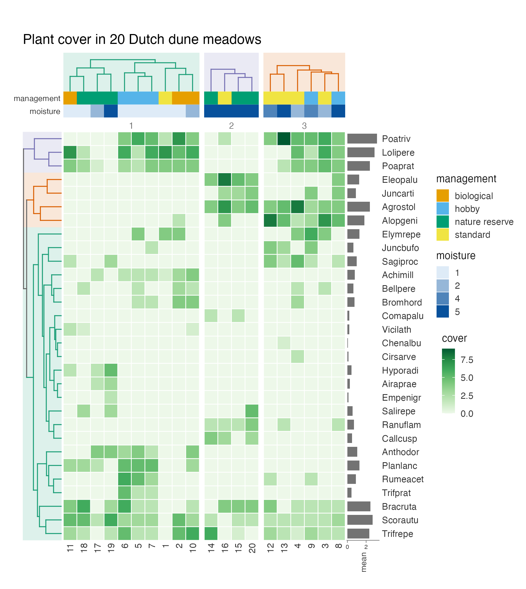
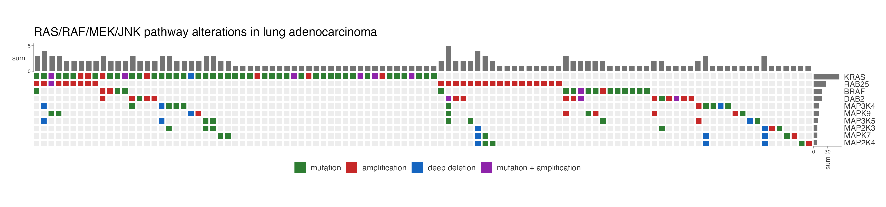
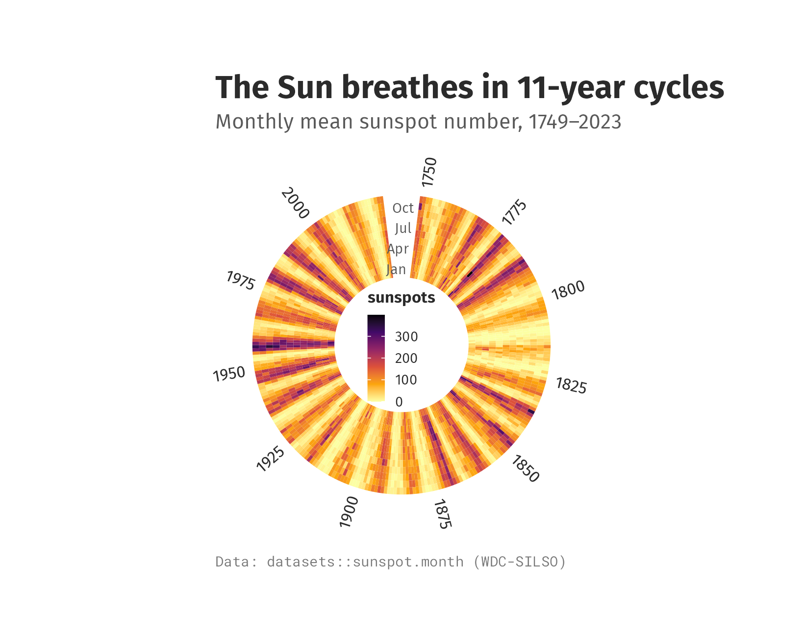
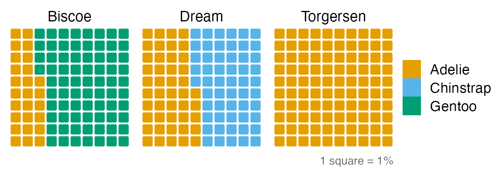
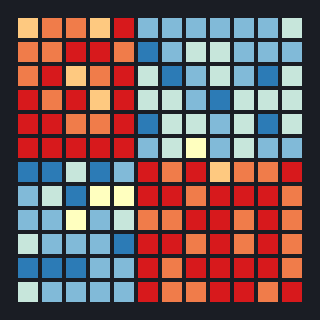
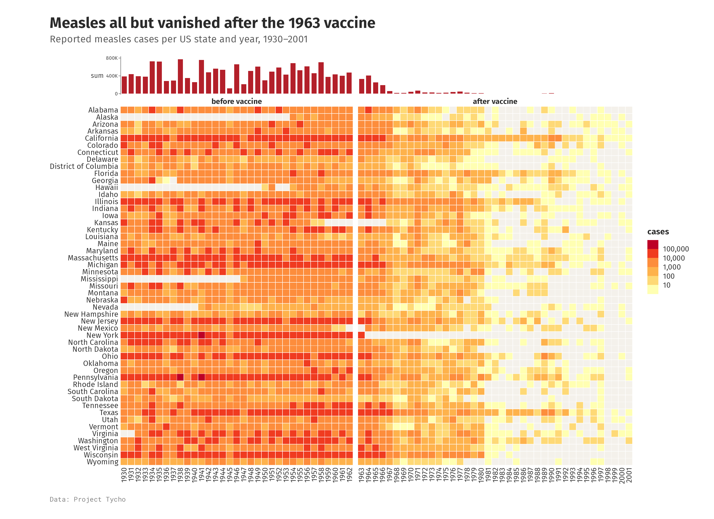
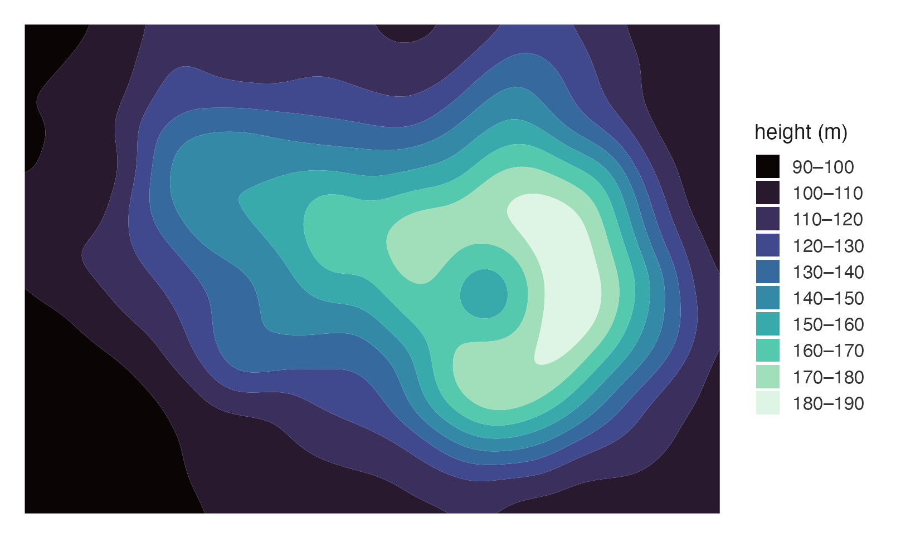

Heatmaps as a grammar of cells, built on ggplot2. Clustering · splits · annotation tracks · margins · rings and waffles, all added with
+.
📖 Website & full documentation: https://loukesio.github.io/ggcalor/ · 🖼️ Gallery: https://loukesio.github.io/ggcalor/articles/gallery.html
ggcalor draws heatmaps and other cell grids (oncoprints, correlation matrices, calendars, rings, waffles) as ordinary ggplot objects. You add clustering, splits, annotation tracks and margins with +, the same way you add a theme or a scale. Calor is Spanish for heat.
|
 Clustering trees, splits and tracks |
 Oncoprints discrete fills and memo sort |
 Rings the grid bent into a circle |
 Waffles unit charts on the same grid |
Contents
- Installation
- Your first heatmap: one matrix, one figure
- Why ggcalor: cells with a real size, verbs you add
- A tour: clustering, oncoprints, rings and waffles
- The verbs · How it compares · Data
Installation

ggcalor needs R 4.1 and ggplot2 4.0 or later. Install the development version from GitHub:
# install.packages("pak")
pak::pak("loukesio/ggcalor")
# ...or with remotes
remotes::install_github("loukesio/ggcalor")
# and load it
library(ggcalor)Your first heatmap
Measles cases in every US state from 1930 to 2001, split at the year the vaccine was licensed, with yearly totals on top:

library(ggcalor)
era <- ifelse(as.integer(colnames(measles)) < 1963, "before vaccine", "after vaccine")
ggcalor(measles, cell_size = 2.6, cell_gap = 0.06, border = NA) +
calor_split(cols = factor(era, c("before vaccine", "after vaccine")), gap = 2) +
calor_margin(top = "sum", size = 14) +
# Years with no reported cases are drawn in light grey.
scale_fill_fermenter(palette = "YlOrRd", direction = 1, transform = "log10",
breaks = 10^(1:5), labels = scales::label_comma(),
na.value = "grey95") +
labs(title = "Measles cases in the United States, 1930–2001",
subtitle = "The vaccine was licensed in 1963", fill = "cases")Why ggcalor
Cells have a real size. You give the cell size in millimetres, and the plot is as large as its cells, trees, tracks and legend need. Cells stay square, labels never overlap, and a heatmap with 200 rows is drawn at the same scale as one with 20. calor_save() writes the file at that natural size, so you don’t have to guess width and height.
Every feature is a verb you add. calor_dendro() clusters and draws trees, calor_split() cuts the grid into slices, calor_anno() adds annotation tracks and calor_margin() adds row or column summaries. They compose in any order and keep everything aligned, including inside each slice.
The result is still a ggplot. scale_fill_*(), theme(), labs() and ggsave() work as usual, and the plot combines with others in patchwork. There is no separate drawing system to learn.
A tour
Clustering, splits and annotations
The dune data from vegan records the cover of 30 plant species in 20 Dutch meadows. Cut into three clusters, the meadows separate largely by moisture: the middle slice holds four of the seven wettest sites, three of them nature reserves. The top tracks show management and moisture, and the bars on the right give each species’ mean cover.
data(dune, dune.env, package = "vegan")
sites <- data.frame(management = dune.env$Management, moisture = dune.env$Moisture,
row.names = rownames(dune))
levels(sites$management) <- c("biological", "hobby", "nature reserve", "standard")
ggcalor(t(dune), cell_size = 4.2) +
calor_dendro(rows = TRUE, cols = TRUE, k = 3, highlight = TRUE) +
calor_split(cols = 3) +
calor_anno(top = sites) +
calor_margin(right = "mean") +
scale_fill_distiller(palette = "Greens", direction = 1) +
labs(title = "Plant cover in 20 Dutch dune meadows", fill = "cover")
Oncoprints
A character matrix gets a discrete fill. Here each cell is one gene in one TCGA lung adenocarcinoma, and empty cells mean no alteration. The plot keeps the ten most often altered genes and the 106 tumours altered in at least one of them. The memo sort puts samples altered in the most frequently hit gene first, which makes mutually exclusive alterations easy to see: KRAS is altered in 55 tumours and BRAF in 18, but only 5 tumours have both.
alt_colours <- c(mutation = "#2E7D32", amplification = "#C62828",
`deep deletion` = "#1565C0", `mutation + amplification` = "#8E24AA")
n_altered <- rowSums(!is.na(luad_alterations))
m <- luad_alterations[order(n_altered, decreasing = TRUE)[1:10], ]
m <- m[, colSums(!is.na(m)) > 0]
ggcalor(m, cell_size = 2.6, cell_gap = 0.25, border = NA, labels = "rows") +
calor_order(rows = "sum", cols = "memo") +
calor_margin(right = "sum", top = "sum", size = 10) +
scale_fill_manual(values = alt_colours, breaks = names(alt_colours), na.value = "grey93") +
labs(title = "RAS/RAF/MEK/JNK pathway alterations in lung adenocarcinoma", fill = NULL) +
theme(legend.position = "bottom")
Beyond heatmaps
The same grid also draws smooth surfaces, rings and waffle charts.
|
 smooth = "contour"
|
calor_radial()
|
ggwaffle()
|
|
The verbs
| Verb | What it does |
|---|---|
ggcalor() |
Matrix, wide or long data in; a grid of cells sized in mm out |
calor_order() |
Sort rows and columns by a statistic, a vector, a function or the memo sort |
calor_dendro() |
Cluster, reorder and draw aligned trees; accepts hclust and dendrogram objects |
calor_split() |
Cut the grid into slices by a grouping vector or by cutting the tree |
calor_anno() |
Categorical or numeric tracks on any side |
calor_margin() |
Row or column summaries as bars or boxplots |
calor_panel() |
Any ggplot of your own beside the heatmap, aligned row by row or column by column |
calor_text() |
Write the values in the cells |
calor_bracket() |
Labelled brackets over groups of rows or columns |
calor_legend("histogram") |
A histogram of the values in place of the colour bar |
calor_labels() |
Where row and column names go, and how they look |
calor_radial() |
Bend the grid into a ring |
calor_interactive(), calor_girafe()
|
Tooltips and linked highlighting through ggiraph |
calor_save(), calor_size()
|
Save at, or report, the natural size |
ggwaffle() |
Unit charts on the same cell grid |
The gallery has a recipe for each of these.
How it compares
ComplexHeatmap is the most complete heatmap toolkit in R, and much of ggcalor’s design follows it. It uses its own grid-based drawing system, though, so its plots don’t take ggplot2 themes and scales. pheatmap is quick for a clustered heatmap but offers little beyond that. geom_tile() is pure ggplot2 but has no trees, tracks or fixed cell size. ggcalor aims for ComplexHeatmap’s layouts with ggplot2’s interface.